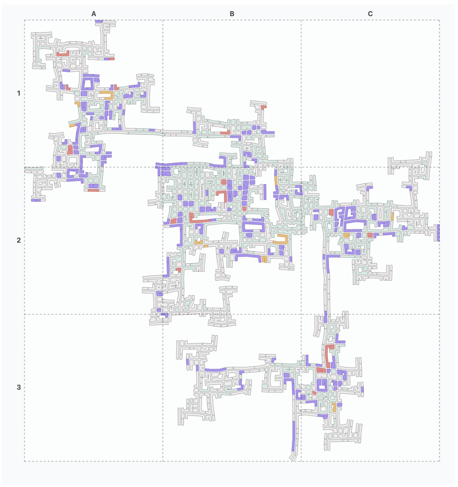
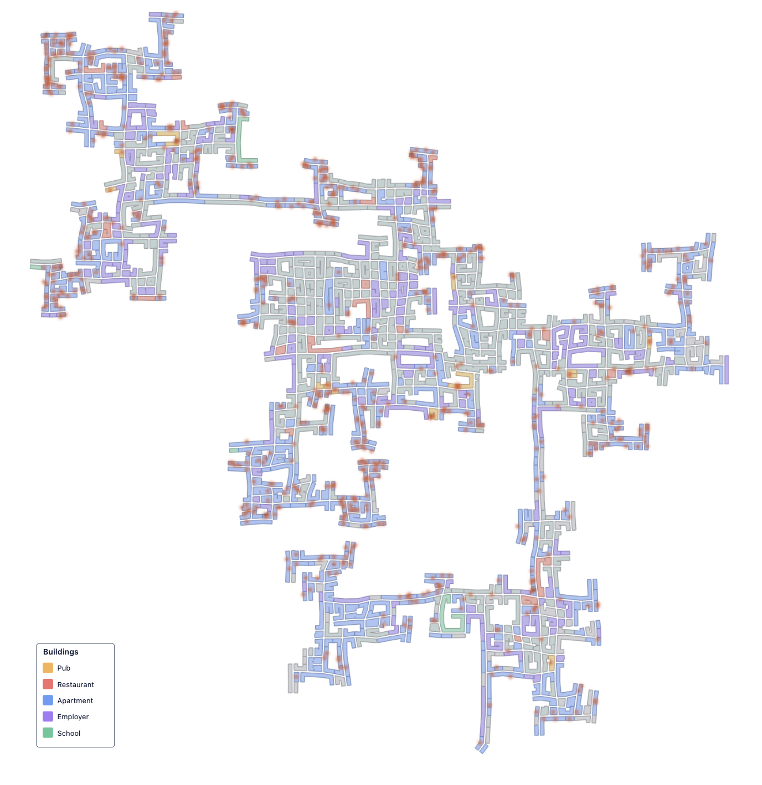
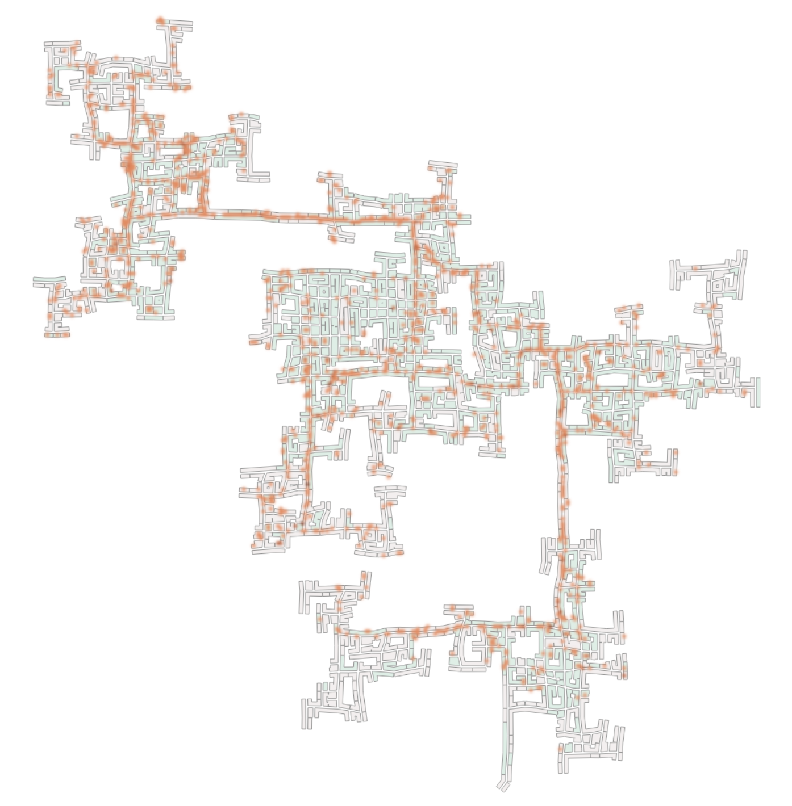
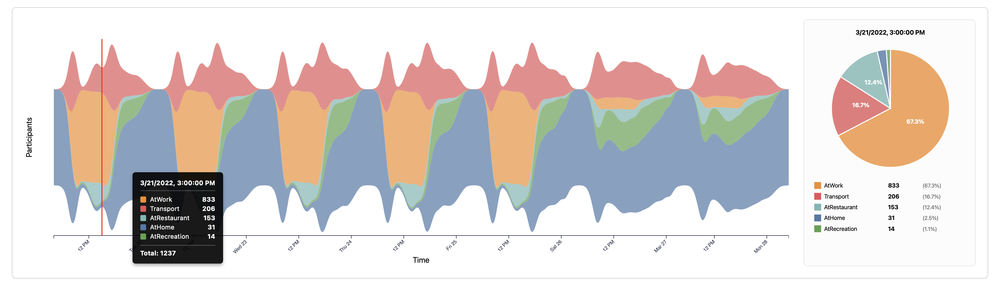
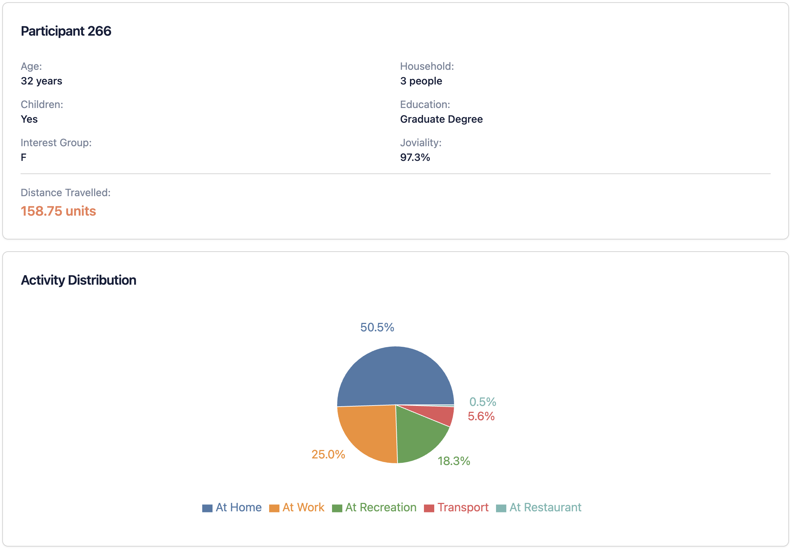
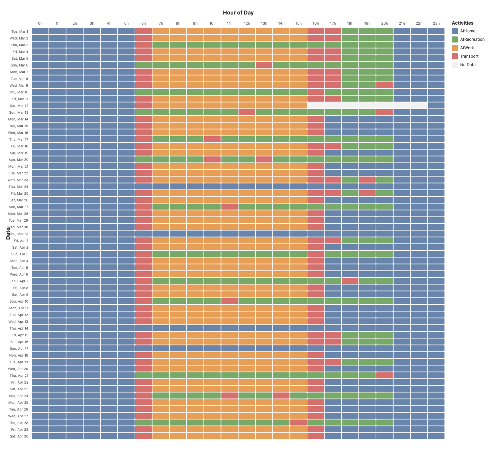
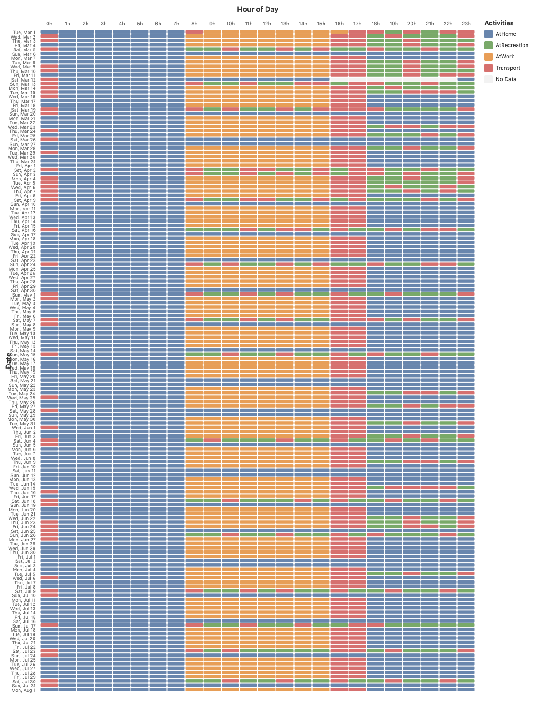
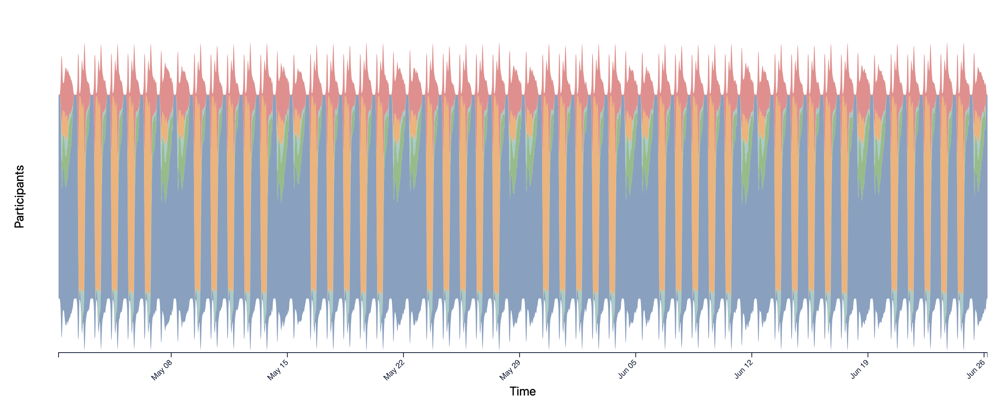

Entry Name: Data Visualization Group 5
VAST Challenge 2022
Challenge 2
Team Members:
Alberto Finardi, Tommaso Crippa, Tom Gave
Student Team: Yes
Tools Used:
d3
React
PostgreSQL
Docker
NodeJS
Bruno
Approximately how many hours were spent working on this submission in total? 32
Video
http://www.youtube.com/ul-smith-mc1-video.avi
Use visual analytics to analyze the available data and develop responses to the questions to be provided. In addition, prepare a video that shows how you used visual analytics to solve this challenge.
Questions
1 - Assuming the volunteers are representative of the city's population, characterize the distinct areas of the city that you identify. For each area you identify, provide your rationale and supporting data. Limit your response to 10 images and 500 words.
Overview
The city extends within an approximately 8km × 8km square region mapped using a coordinate grid dynamically settable. Multiple distinct zones are identifiable through building type distribution, activity patterns, and movement corridors. Large undeveloped or inaccessible areas exist within the city boundaries, particularly in the north-east and south-west edges.
[SCREENSHOT 1: Building Types Overview Map - /building-polygons]
Figure 1. Overview map showing building type distribution across the city with coordinate grid overlay, highlighting residential (apartments) and commercial (employers, restaurants, pubs) zones.
Downtown Commercial Core
The regions A1, B2 and C2 exhibit dominant commercial function, with high concentrations of employer buildings and eating venues supporting business activity. An additional zone at C3 shows notable ammount of commercial buildings, but only a single pub and few restaurants.

Figure 2. Building type map filtered to show employers, restaurants, and pubs.

Figure 3. Activity density heatmap during business hours showing concentrated activity in downtown zones.
Residential Areas
Zones A1-2, B3-4, D2 and D4 are predominantly residential, characterized by high apartment density.

Figure 4. Map filtered to apartments only.

Figure 5. Evening activity heatmap showing residential area activity in the residential zones.
Mixed Suburban Character
The peripheral zones (northwest, southeast) demonstrate mixed residential-commercial patterns, with residential dominance toward outer edges. Zones in the northwest features suburban residential on its western side with commercial activity eastward, notably connected to the city only via a single major route, creating potential infrastructure constraints. Zones in the southeast exhibits suburban housing with commercial activity on the city-facing (western) side.

Figure 6. Mixed-use activity areas in outer zones.
Movement Patterns and Connectivity
Movement patterns reveal distinct connecting roads that form edges between activity zones. A major east-west corridor connects the western zones (A-B) to the central downtown (D-F). The northwest zone (A1-B3) has limited connectivity via a single major route. Job opportunities concentrate in northern zones (rows 1-3) but distribute throughout non-residential parts of the entire city, creating travel infrastructure demands.

Figure 8. Morning rush hour activity showing movement patterns toward employment centers in zones B2-C3 and C3-E4.

Figure 9. Side-by-side comparison of activity patterns at different times of day, illustrating the functional distinction between commercial and residential zones.
Summary
The residential-commercial distinction clearly emerges through building type analysis, with zones serving downtown functions while other provide housing. Mixed-use zones transition from commercial on their city-facing sides to residential at their peripheries. The boundary zones represent a critical infrastructure planning area due to high mixed-use density.
| Zone |
Primary Character |
Key Features |
Connectivity |
| North-West |
Mixed (residential west, commercial east) |
Northwest suburban, limited access |
Single major route |
| Central-north |
Commercial center |
Restaurants/pubs, peripheral activity |
Well-connected |
| Central-south |
Downtown core |
North: employment, South: residential |
Central hub |
| East |
Mixed suburban |
Northeast residential outskirts |
Good connectivity |
| South |
Mixed suburban |
Southeast apartments, some commerce |
Moderate connectivity |
2 - Where are the busiest areas in Engagement? Are there traffic bottlenecks that should be addressed? Explain your rationale. Limit your response to 10 images and 500 words.
Overview
Analyzing movement patterns reveals concentrated activity along specific corridors connecting residential and commercial zones. Temporal analysis shows distinct peak periods when roads experience maximum usage, creating potential bottlenecks that could benefit from infrastructure improvements.
Overall Activity Density
The heatmap of all participant locations throughout the study period reveals clear high-density zones. The busiest areas concentrate in zones B2-C3 (downtown commercial core), with secondary activity centers at A1-B1 (northwest mixed zone) and D3-E4 (eastern residential-commercial transition). Major connecting corridors between these zones show sustained high usage throughout the day.

Figure 2.1. Overall participant activity density showing busiest areas across the entire study period.
Rush Hour Movement Patterns
Morning rush hours (7-9 AM) exhibit concentrated movement from residential zones (A2, B4, D2, D4) toward employment centers in B2-C3. The roads connecting these areas become primary bottlenecks, particularly the major east-west corridor linking zones A-B to C-D, and the single connecting route to the northwest zone A1-B1.

Figure 2.2. Morning rush hour (7-9 AM) activity showing concentrated movement toward employment centers.
Evening rush hours (5-7 PM) reverse this pattern, with heavy traffic from commercial zones back to residential areas. The same corridors experience bidirectional bottlenecks, compounded by social activity beginning simultaneously as work ends.

Figure 2.3. Evening rush hour (5-7 PM) showing return traffic to residential zones plus social activity.
Activity Type Analysis
The streamgraph visualization reveals temporal patterns across different activity modes. Work-related activity dominates weekday daytime hours (8 AM-6 PM), while social/recreation activities peak during evenings and weekends. Eating-related movement shows trimodal patterns around meal times, creating predictable congestion at 8 AM, 12 PM, and 6-7 PM.

Figure 2.4. Temporal distribution of activity modes showing work, social, and eating patterns throughout the study period.
Critical Bottleneck Routes
Three critical bottlenecks emerge from the analysis:
Route 1 (Northwest Connector): The single major road connecting the northwest zone (A1-B1) to the central city creates severe congestion during peak hours. This route serves a substantial residential and commercial population with no alternative paths, making it the most critical bottleneck in the city.

Figure 2.5. Northwest connector route showing heavy single-path dependency during morning commute.
Route 2 (Central East-West Corridor): The primary east-west corridor connecting zones A-B to C-D experiences sustained high traffic throughout business hours. Multiple residential areas funnel through this route to reach downtown employment centers.

Figure 2.6. Central east-west corridor showing sustained high-density usage throughout business hours.
Route 3 (Southern Connector): Roads connecting the southeastern zones (D4-E4) to the central downtown create bottlenecks during both morning and evening rush hours, particularly where multiple residential areas converge.
Workplace and Venue Concentrations
The concentration of employers in zones B2-C3 creates natural traffic convergence points. Similarly, popular pubs and restaurants in the central area (C2-C3) draw evening traffic from across the city, compounding evening congestion on the same routes used for commuting.

Figure 2.7. Workplace and entertainment venue concentrations showing overlap in central zones that amplifies congestion.
Temporal Congestion Patterns
Animating the heatmap reveals how congestion builds and dissipates throughout the day. Weekday patterns show sharp peaks during rush hours with relatively clear roads during midday and late evening. Weekend patterns differ significantly, with more distributed activity throughout daylight hours and higher social venue traffic in evenings.

Figure 2.8. Comparison of weekday versus weekend activity patterns showing distinct temporal congestion profiles.
Journey Efficiency Analysis
The limited road network forces many journeys to take indirect routes. Participants traveling between northwest (A1-B1) and eastern zones (D3-E4) must traverse through the congested central corridor, significantly increasing travel time. Similarly, residents in the southern zones face limited direct routes to workplaces, contributing to bottleneck formation.

Figure 2.9. Visualization of indirect routes showing forced detours through congested central zones.
Summary
The busiest areas concentrate in zones B2-C3 with critical bottlenecks on routes connecting peripheral residential areas to this downtown core. The northwest connector represents the most severe single-point failure, while the central east-west corridor experiences sustained congestion. Infrastructure improvements should prioritize creating alternative routes and distributing commercial activity to reduce pressure on these critical bottlenecks.
3 - Participants have given permission to have their daily routines captured. Choose two different participants with different routines and describe their daily patterns, with supporting evidence. Limit your response to 10 images and 500 words.
Participant Selection
Two participants were selected displaying contrasting patterns: Participant 266 representing a socially active individual with short commutes and high joviality, and Participant 845 representing a long-distance commuter with limited social activity and much lower joviality.

Figure 3.1. Shows a comparison between Participant 266 and Participant 845 in terms of travel distance, joviality, and social activity.
Participant 266: The Social Local
Participant 266 is a 32 years old person that exhibits significantly below-average travel distance, with 158.75 units done in March 2022, about 5 units per day, spending much less time commuting than typical participants. Their home and workplace are located in close proximity in the city center, enabling easy walking-distance commutes. They have one of the highest joviality scores (97.3%) and maintain robust social activity (18.3% of time).

Figure 3.2. Summary statistics for Participant 266 highlighting travel distance, joviality, and social activity.
The map of their activities reveals concentration in the southern portions of the city center. Their favored social and dining venues cluster near their residence, minimizing travel requirements. Notably, their typical routes avoid the major traffic bottlenecks identified in Question 2, likely contributing to their sustained high joviality.
The activity calendar visualization provides detailed temporal insights across the month of March 2022. Participant 266 displays highly regular weekday work patterns with consistent start and end times. Their work schedule shows minimal variation, appearing as solid blocks in the calendar view. Right after work the participant would get straight into socializing near the neighborhood, occasionally needing to take transportation for not more than 1 hour to do so. The weekend behavior changes most of the times, either socializing both days, only one of the days or staying home both days.

Figure 3.3. Activity calendar for Participant 266 showing regular work patterns (orange) and contrasting weekend behavior with social activities (green) and home time (blue).
Participant 845: The Long-Distance Commuter
Participant 845 is a 40 year old person who presents a contrasting profile, spending 13.6% of his time traveling on average, substantially above the sample mean. Their home in the south of Engagement while his workplace is on the east side, necessitating long commutes traversing multiple bottleneck routes for 32,2 units per day (6 times more than Participant 266). They have below-average joviality and maintain limited social engagement, averaging only 5.2% of social activity on March 2022.

Figure 3.4. Summary statistics for Participant 845 highlighting travel distance, joviality, and social activity.
The map reveals the geographic challenges they face. The substantial distance between home (south) and work (east) requires traversing congested corridors identified as major bottlenecks. Social activities, when they occur, involve even longer journeys.
The activity calendar reveals their demanding daily routine. Weekday mornings begin with departure from home at 7:00 AM, followed by an 1 hour long commute, arriving at work around 8:00 AM. They finish work around 16:00 PM, facing another extended commute that brings them home just after 17:00 PM. Most evenings are spent at home, with one/two social evenings per week.

Figure 3.5. Activity calendar for Participant 845 showing consistent long commutes (red), regular work blocks (orange), and limited social activity (green).
Comparative Analysis
The contrast between these participants highlights how geographic location relative to workplace and amenities profoundly impacts daily experience. Participant 266's localized activity pattern enables high social engagement and likely contributes to sustained well-being. Participant 845's long-distance commute consumes substantial daily time, constraining opportunities for social connection and potentially contributing to lower initial joviality.

Figure 3.9. Side-by-side comparison of key metrics for both participants showing stark contrasts in lifestyle patterns.
Summary
These two participants exemplify the spectrum of daily experiences in Engagement. Participant 266 benefits from proximity between home, work, and social venues, enabling an active social life with minimal travel burden. Participant 845 faces geographic constraints requiring extensive daily commuting through congested routes, limiting social opportunities and consuming significant time. These patterns underscore the importance of urban planning that considers residential-workplace proximity and transportation infrastructure in supporting quality of life.
4 - Over the span of the dataset, how do patterns change in the city change? Describe up to 10 significant changes, with supporting evidence. Limit your response to 10 images and 500 words.
Overview
The 15-month study period (450 days) reveals multiple significant temporal changes in city activity patterns. To facilitate spatio-temporal analysis, we created virtual traffic sensors at critical infrastructure points corresponding to the bottleneck routes identified in Question 2. Each sensor monitors bidirectional traffic flow across 500-meter zones—sufficient to capture all movement given the 5-minute sampling interval and typical travel speeds. These sensors enable systematic tracking of traffic volume changes across time scales from daily cycles to long-term trends.

Figure 4.1. Virtual traffic sensor locations at key bottleneck points across the city's road network.
Change 1: Initial Activity Decline
The most dramatic change occurs during the first 60 days of the study. All virtual sensors register substantially higher traffic volumes during the opening week, followed by steady decline over the subsequent two months. After approximately day 60, traffic volumes stabilize at equilibrium levels that persist throughout the remaining study period. This pattern suggests initial participant enthusiasm or novelty effect that gradually normalizes to representative behavior.

Figure 4.2. Traffic volumes at all sensors over the 450-day study period, showing initial peak and subsequent stabilization. Red/blue indicate directional flow.
Change 2: Social Activity Burst
Activity calendar analysis reveals intensive social activity (venue check-ins) during the first 3-4 weeks across many participants. This pattern, observable in participants like 266 (Question 3) and 797, shows markedly higher frequency of social events before settling into more regular routines. This behavioral change contributes significantly to the elevated traffic volumes observed in Change 1, as social activities often require longer travel distances than routine work-home commutes.

Figure 4.3. Activity calendar for Participant 797 showing intense social activity (blue) in opening weeks before stabilizing to regular patterns.
Change 3: Periodic Behavior Modifications
Beyond the initial adjustment period, many participants exhibit periodic changes in social and eating behavior throughout the 15 months. These appear as clustered bursts of activity variation, including shifts in weekend routines and evening activities. Participant 744 exemplifies this pattern with several distinct periods of altered behavior, suggesting lifestyle adjustments, seasonal variations, or personal circumstance changes affecting multiple individuals simultaneously.

Figure 4.4. Activity calendar for Participant 744 showing periodic bursts of behavioral change in social and eating activities.
Change 4: Daily Commute Patterns
Daily weekday patterns show pronounced morning (7-9 AM) and evening (5-7 PM) rush hour peaks, most prominently at Sensor 1 (northwest connector). Notably, most sensors show relatively balanced bidirectional flow, indicating commuters generally return via similar routes. Traffic volumes reach minimum levels between midnight and 5 AM, with gradual build-up beginning around 6 AM.

Figure 4.5. Average traffic volume over 24 hours at all sensor locations (5-minute intervals averaged across 450 days). Red/blue indicate directional flow.
Change 5: Tidal Traffic Flow at Residential Connectors
While most sensors show balanced bidirectional traffic, Sensors 6 and 6b (connecting major residential zones) exhibit strong tidal effects. Morning flows heavily inbound toward commercial centers, while evening flows reverse dramatically outbound toward residential areas. This asymmetry reflects the residential-commercial separation in city planning and demonstrates concentrated demand on specific connecting routes during peak periods.
Change 6: Weekday-Weekend Activity Shifts
Weekend activity patterns differ fundamentally from weekdays. Morning movement at 8 AM on weekdays consists predominantly of work commutes, while equivalent Saturday morning traffic comprises social and eating-related travel. This functional shift redistributes traffic spatially, with different routes experiencing peak demand based on day of week.

Figure 4.6. Comparison of 8 AM movement on weekdays (left) versus weekends (right), colored by destination activity type.
Change 7: Zone-Specific Weekend Traffic Variations
Sensors 3 and 6 demonstrate contrasting weekend responses. Sensor 3 (serving primarily commercial Area B) shows significant traffic decline on weekends, while Sensor 6 (residential Area E connector) experiences weekend traffic increases. This reflects functional zone character: commercial areas see reduced activity while residential areas maintain or increase traffic as residents engage in discretionary weekend activities.

Figure 4.7. Traffic volume comparison for Sensors 3 and 6 showing contrasting weekday-weekend patterns based on zone function.
Change 8: Midday Activity Lull
All sensors show consistent midday traffic reduction between 10 AM and 2 PM on weekdays. This lull reflects participants settling into stationary work activities, with only brief lunch-related travel creating minor peaks around noon. Weekend midday patterns remain more elevated and variable, consistent with discretionary activity timing flexibility.

Figure 4.8. Detailed midday traffic patterns (10 AM-2 PM) showing weekday lull versus sustained weekend activity.
Change 9: Evening Social Activity Peak
Post-work hours (7-11 PM) show distinctive activity patterns differing from morning commutes. The streamgraph reveals transition from work activities to social and eating activities during these hours. Traffic sensors show this translates to sustained but more distributed traffic compared to concentrated morning rush hour peaks, as social destinations scatter more widely than workplace concentrations.

Figure 4.9. Streamgraph detail showing evening transition from work to social/eating activities (7-11 PM).
Change 10: Long-Term Equilibrium Stability
Following the initial 60-day adjustment period, the city demonstrates remarkable long-term stability in aggregate activity patterns. Day-to-day variations persist, but overall traffic volumes, timing distributions, and spatial patterns remain consistent across the remaining 13 months. This suggests the city reaches a steady-state operational mode where participant behaviors, while individually variable, produce predictable aggregate patterns suitable for infrastructure planning.

Figure 4.10. Statistical analysis of traffic volume stability comparing days 60-150, 151-300, and 301-450, showing consistent equilibrium.
Summary
The 15-month study reveals distinct temporal change patterns operating at multiple time scales. Initial participant adjustment drives dramatic early changes before stabilizing after 60 days. Daily and weekly cycles create predictable traffic patterns dominated by work commutes on weekdays and discretionary activities on weekends. Zone-specific characteristics produce contrasting responses to temporal patterns, with commercial areas experiencing weekday peaks and residential connectors showing tidal flows. Long-term stability following the adjustment period suggests the observed patterns accurately represent typical city functioning, validating infrastructure planning based on these data.